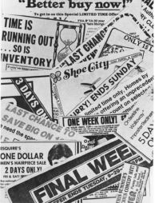

THE CITY OF MESA, ARIZONA, IS A SUBURB IN THE PHOENIX AREA where I live. Perhaps the most notable features of Mesa are its sizable Mormon population—next to that of Salt Lake City, the largest in the world—and a huge Mormon temple located on exquisitely kept grounds in the center of the city. Although I had appreciated the landscaping and architecture from a distance, I had never been interested enough in the temple to go inside until the day I read a newspaper article that told of a special inner sector of Mormon temples to which no one has access but faithful members of the Church. Even potential converts must not see it. There is one exception to the rule, however. For a few days immediately after a temple is newly constructed, nonmembers are allowed to tour the entire structure, including the otherwise restricted section.
The newspaper story reported that the Mesa temple had recently been refurbished and that the renovations had been extensive enough to classify it as “new” by Church standards. Thus, for the next several days only, non-Mormon visitors could see the temple area traditionally banned to them. I remember quite well the effect of the article on me: I immediately resolved to take a tour. But when I phoned a friend to ask if he wanted to come along, I came to understand something that changed my decision just as quickly.
After declining the invitation, my friend wondered why I seemed so intent on a visit. I was forced to admit that, no, I had never been inclined toward the idea of a temple tour before, that I had no questions about the Mormon religion I wanted answered, that I had no general interest in the architecture of houses of worship, and that I expected to find nothing more spectacular or stirring than I might see at a number of other temples, churches, or cathedrals in the area. It became clear as I spoke that the special lure of the temple had a sole cause: If I did not experience the restricted sector shortly, I would never again have the chance. Something that, on its own merits, held little appeal for me had become decidedly more attractive merely because it would soon become unavailable.
Since that encounter with the scarcity principle—that opportunities seem more valuable to us when their availability is limited—I have begun to notice its influence over a whole range of my actions. For instance, I routinely will interrupt an interesting face-to-face conversation to answer the ring of an unknown caller. In such a situation, the caller has a compelling feature that my face-to-face partner does not: potential unavailability. If I don’t take the call, I might miss it (and the information it carries) for good. Never mind that the ongoing conversation may be highly engaging or important—much more than I could reasonably expect an average phone call to be. With each unanswered ring, the phone interaction becomes less retrievable. For that reason and for that moment, I want it more than the other.
The idea of potential loss plays a large role in human decision making. In fact, people seem to be more motivated by the thought of losing something than by the thought of gaining something of equal value. For instance, homeowners told how much money they could lose from inadequate insulation are more likely to insulate their homes than those told how much money they could save. Similar results have been obtained by health researchers: Pamphlets urging young women to check for breast cancer through self-examinations are significantly more successful if they state their case in terms of what stands to be lost (e.g., “You can lose several potential health benefits by failing to spend only five minutes each month doing breast self-examination”) rather than gained (e.g., “You can gain several potential health benefits by spending only five minutes each month doing breast self-examination”).104
Collectors of everything from baseball cards to antiques are keenly aware of the influence of the scarcity principle in determining the worth of an item. As a rule, if it is rare or becoming rare, it is more valuable. Especially enlightening as to the importance of scarcity in the collectibles market is the phenomenon of the “precious mistake.” Flawed items—a blurred stamp or a double-struck coin—are sometimes the most valued of all. Thus a stamp carrying a three-eyed likeness of George Washington is anatomically incorrect, aesthetically unappealing, and yet highly sought after. There is instructive irony here: Imperfections that would otherwise make for rubbish make for prized possessions when they bring along an abiding scarcity.
With the scarcity principle operating so powerfully on the worth we assign things, it is natural that compliance professionals will do some related operating of their own. Probably the most straightforward use of the scarcity principle occurs in the “limited-number” tactic, when the customer is informed that a certain product is in short supply that cannot be guaranteed to last long. During the time I was researching compliance strategies by infiltrating various organizations, I saw the limited-number tactic employed repeatedly in a range of situations: “There aren’t more than five convertibles with this engine left in the state. And when they’re gone, that’s it, ’cause we’re not making ’em anymore.” “This is one of only two unsold corner lots in the entire development. You wouldn’t want the other one; it’s got a nasty east-west exposure.” “You may want to think seriously about buying more than one case today because production is backed way up and there’s no telling when we’ll get any more in.”
Sometimes the limited-number information was true, sometimes it was wholly false. But in each instance, the intent was to convince customers of an item’s scarcity and thereby increase its immediate value in their eyes. I admit to developing a grudging admiration for the practitioners who made this simple device work in a multitude of ways and styles. I was most impressed, however, with a particular version that extended the basic approach to its logical extreme by selling a piece of merchandise at its scarcest point—when it seemingly could no longer be had. The tactic was played to perfection in one appliance store I investigated, where 30 to 50 percent of the stock was regularly listed as on sale. Suppose a couple in the store seemed from a distance to be moderately interested in a certain sale item. There are all sorts of cues that tip off such interest—closer-than-normal examination of the appliance, a casual look at any instruction booklets associated with the appliance, discussions held in front of the appliance, but no attempt to seek out a salesperson for further information. After observing the couple so engaged, a salesperson might approach and say, “I see you’re interested in this model here, and I can understand why; it’s a great machine at a great price. But, unfortunately, I sold it to another couple not more than twenty minutes ago. And, if I’m not mistaken, it was the last one we had.”
The customers’ disappointment registers unmistakably. Because of its lost availability, the appliance jumps suddenly in attractiveness. Typically, one of the customers asks if there is any chance that an unsold model still exists in the store’s back room, warehouse, or other location. “Well,” the salesperson allows, “that is possible, and I’d be willing to check. But do I understand that this is the model you want and if I can get it for you at this price, you’ll take it?” Therein lies the beauty of the technique. In accord with the scarcity principle, the customers are asked to commit to buying the appliance when it looks least available—and therefore most desirable. Many customers do agree to a purchase at this singularly vulnerable time. Thus, when the salesperson (invariably) returns with the news that an additional supply of the appliance has been found, it is also with a pen and sales contract in hand. The information that the desired model is in good supply may actually make some customers find it less attractive again.105 But by then, the business transaction has progressed too far for most people to renege. The purchase decision made and committed to publicly at an earlier, crucial point still holds. They buy.
Related to the limited-number technique is the “deadline” tactic, in which some official time limit is placed on the customer’s opportunity to get what the compliance professional is offering. Much like my experience with the Mormon temple’s inner sanctum, people frequently find themselves doing what they wouldn’t particularly care to do simply because the time to do so is shrinking. The adept merchandiser makes this tendency pay off by arranging and publicizing customer deadlines—witness the collage of such newspaper ads in Figure 7–3—that generate interest where none may have existed before. Concentrated instances of this approach often occur in movie advertising. In fact, I recently noticed that one theater owner, with remarkable singleness of purpose, had managed to invoke the scarcity principle three separate times in just five words that read, “Exclusive, limited engagement ends soon!”
Swindled
By Peter Kerr
New York Times
NEW YORK—Daniel Gulban doesn’t remember how his life savings disappeared.
He remembers the smooth voice of a salesman on the telephone. He remembers dreaming of a fortune in oil and silver futures. But to this day, the 81-year-old retired utility worker does not understand how swindlers convinced him to part with $18,000.
“I just wanted to better my life in my waning days,” said Gulban, a resident of Holder, Fla. “But when I found out the truth, I couldn’t eat or sleep. I lost 30 pounds. I still can’t believe I would do anything like that.”
Gulban was the victim of a what law enforcement officials call a “boiler-room operation,” a ruse that often involves dozens of fast-talking telephone salesmen crammed into a small room where they call thousands of customers each day. The companies snare hundreds of millions of dollars each year from unsuspecting customers, according to a U.S. Senate subcommittee on investigations, which issued a report on the subject last year.
“They use an impressive Wall Street address, lies and deception to get individuals to sink their money into various glamorous-sounding schemes,” said Robert Abrams, the New York State attorney general, who has pursued more than a dozen boiler-room cases in the past four years. “The victims are sometimes persuaded to invest the savings of a lifetime.”
Orestes J. Mihaly, the New York assistant attorney general in charge of the bureau of investor protection and securities, said the companies often operate in three stages. First, Mihaly said, comes the “opening call,” in which a salesman identifies himself as representing a company with an impressive-sounding name and address. He will simply ask the potential customer to receive the company’s literature.
A second call involves a sales pitch, Mihaly said. The salesman first describes the great profits to be made and then tells the customer that it is no longer possible to invest. The third call gives the customer a chance to get in on the deal, he said, and is offered with a great deal of urgency.
“The idea is to dangle a carrot in front of the buyer’s face and then take it away,” Mihaly said. “The aim is to get someone to want to buy quickly, without thinking too much about it.” Sometimes, Mihaly said, the salesman will be out of breath on the third call and will tell the customer that he “just came off the trading floor.”
Such tactics convinced Gulban to part with his life savings. In 1979, a stranger called him repeatedly and convinced Gulban to wire $1,756 to New York to purchase silver, Gulban said. After another series of telephone calls the salesman cajoled Gulban into wiring more than $6,000 for crude oil. He eventually wired an additional $9,740, but his profits never arrived.
“My heart sank,” Gulban recalled. “I was not greedy. I just hoped I would see better days.” Gulban never recouped his losses.
FIGURE 7-2
The Scarcity Scam
Note how the scarcity principle was employed during the second and third phone calls to cause Mr. Gulban to “buy quickly without thinking too much about it.” Click, blur.
(PETER KERR, THE NEW YORK TIMES)
A variant of the deadline tactic is much favored by some face-to-face, high-pressure sellers because it carries the purest form of decision deadline: right now. Customers are often told that unless they make an immediate decision to buy, they will have to purchase the item at a higher price or they will be unable to purchase it at all. A prospective health-club member or automobile buyer might learn that the deal offered by the salesperson is good only for that one time; should the customer leave the premises, the deal is off. One large child-portrait photography company urges parents to buy as many poses and copies as they can afford because “stocking limitations force us to burn the unsold pictures of your children within twenty-four hours.” A door-to-door magazine solicitor might say that salespeople are in the customer’s area for just a day; after that, they—and the customer’s chance to buy their magazine package—will be long gone. A home vacuum-cleaner operation I infiltrated instructed its sales trainees to claim, “I have so many other people to see that I have the time to visit a family only once. It’s company policy that even if you decide later that you want this machine, I can’t come back and sell it to you.” This, of course, is nonsense; the company and its representatives are in the business of making sales, and any customer who called for another visit would be accommodated gladly. As the company sales manager impressed on his trainees, the true purpose of the can’t-come-back claim has nothing to do with reducing overburdened sales schedules. It is to “keep the prospects from taking the time to think the deal over by scaring them into believing they can’t have it later, which makes them want it now.”
PSYCHOLOGICAL REACTANCE
The evidence, then, is clear. Compliance practitioners’ reliance on scarcity as a weapon of influence is frequent, wide-ranging, systematic, and diverse. Whenever such is the case with a weapon of influence, we can feel assured that the principle involved has notable power in directing human action. In the instance of the scarcity principle, that power comes from two major sources. The first is familiar. Like the other weapons of influence, the scarcity principle trades on our weakness for shortcuts. The weakness is, as before, an enlightened one. In this case, because we know that the things that are difficult to possess are typically better than those that are easy to possess, we can often use an item’s availability to help us quickly and correctly decide on its quality. Thus, one reason for the potency of the scarcity principle is that, by following it, we are usually and efficiently right.106

FIGURE 7-3
Don’t Wait!
Last chance to read this now before you turn the page
(ROBERT B. CIALDINI)
In addition, there is a unique, secondary source of power within the scarcity principle: As opportunities become less available, we lose freedoms; and we hate to lose the freedoms we already have. This desire to preserve our established prerogatives is the centerpiece of psychological reactance theory, developed by psychologist Jack Brehm to explain the human response to diminishing personal control. According to the theory, whenever free choice is limited or threatened, the need to retain our freedoms makes us desire them (as well as the goods and services associated with them) significantly more than previously. So when increasing scarcity—or anything else—interferes with our prior access to some item, we will react against the interference by wanting and trying to possess the item more than before.107
As simple as the kernel of the theory seems, its shoots and roots curl extensively through much of the social environment. From the garden of young love to the jungle of armed revolution to the fruits of the marketplace, impressive amounts of our behavior can be explained by examining for the tendrils of psychological reactance. Before beginning such an examination, though, it would be helpful to know when people first show the desire to fight against restrictions of their freedoms.
Child psychologists have traced the tendency back to the start of the third year of life—a year independently identified as a problem by parents and widely known to them as “the terrible twos.” Most parents can attest to the development of a decidedly more contrary style in their children around this period. Two-year-olds seem masters of the art of resistance to outside, especially parental, pressure: Tell them one thing, they do the opposite; give them one toy, they want another; pick them up against their will, they wriggle and squirm to be put down; put them down against their will, they claw and struggle to be carried.
One Virginia-based study nicely captured the terrible twos style among boys who averaged twenty-four months in age. The boys accompanied their mothers into a room containing two equally attractive toys. The toys were always arranged so that one stood next to a transparent Plexiglas barrier and the other stood behind the barrier. For some of the boys, the Plexiglas sheet was only a foot tall—forming no real barrier to the toy behind, since the boys could easily reach over the top. For the other boys, however, the Plexiglas was two feet tall, effectively blocking the boys’ access to one toy unless they went around the barrier. The researchers wanted to see how quickly the toddlers would make contact with the toys under these conditions. Their findings were clear. When the barrier was too small to restrict access to the toy behind it, the boys showed no special preference for either of the toys; on the average, the toy next to the barrier was touched just as quickly as the one behind. But when the barrier was big enough to be a true obstacle, the boys went directly to the obstructed toy, making contact with it three times faster than with the unobstructed toy. In all, the boys in this study demonstrated the classic terrible twos’ response to a limitation of their freedom: outright defiance.108
Why should psychological reactance emerge at the age of two? Perhaps the answer has to do with a crucial change that most children go through around this time. It is then that they first come to a full recognition of themselves as individuals. No longer do they view themselves as mere extensions of the social milieu but rather as identifiable, singular, and separate.109 This developing concept of autonomy brings naturally with it the concept of freedom. An independent being is one with choices; and a child with the newfound realization that he or she is such a being will want to explore the length and breadth of the options. Perhaps we should be neither surprised nor distressed, then, when our two-year-olds strain incessantly against our will. They have come to a recent and exhilarating perspective on themselves as free-standing human entities. Vital questions of volition, entitlements, and control now need to be asked and answered within their small minds. The tendency to fight for every liberty and against every restriction might be best understood as a quest for information. By testing severely the limits of their freedoms (and coincidentally, the patience of their parents), the children are discovering where in their worlds they can expect to be controlled and where they can expect to be in control. As we will see later, the wise parent provides highly consistent information.
Although the terrible twos may be the most noticeable age of psychological reactance, we show the strong tendency to react against restrictions on our freedoms of action throughout our lives. One other age does stand out, however, as a time when this tendency takes an especially rebellious form: teenage. Like the twos, this is a period characterized by an emerging sense of individuality. For teenagers, the emergence is from the role of child, with all of its attendant parental control, and toward the role of adult, with all of its attendant rights and duties. Not surprisingly, adolescents tend to focus less on the duties than on the rights they feel they have as young adults. Not surprisingly, again, imposing traditional parental authority at these times is often counterproductive; the teenager will sneak, scheme, and fight to resist such attempts at control.
Nothing illustrates the boomerang quality of parental pressure on adolescent behavior quite so clearly as a phenomenon known as the “Romeo and Juliet effect.” As we know, Romeo Montague and Juliet Capulet were the ill-fated Shakespearean characters whose love was doomed by a feud between their families. Defying all parental attempts to keep them apart, the teenagers won a lasting union in their tragic act of twin suicide, an ultimate assertion of free will.
The intensity of the couple’s feelings and actions has always been a source of wonderment and puzzlement to observers of the play. How could such inordinate devotion develop so quickly in a pair so young? A romantic might suggest rare and perfect love. A social scientist, though, might point to the role of parental interference and the psychological reactance it can produce. Perhaps the passion of Romeo and Juliet was not initially so consuming that it transcended the extensive barriers erected by the families. Perhaps, instead, it was fueled to a white heat by the placement of those barriers. Could it be that had the youngsters been left to their own devices, their inflamed devotion would have amounted to no more than a flicker of puppy love?
Because the story is fiction, such questions are, of course, hypothetical, and any answers to them are speculative. However, it is possible to ask and answer with more certainty similar questions about modern-day Romeos and Juliets. Do couples suffering parental interference react by committing themselves more firmly to the partnership and falling more deeply in love? According to a study done with 140 Colorado couples, that is exactly what they do. In fact, the researchers found that although parental interference was linked to some problems in the relationship—the partners viewed one another more critically and reported a greater number of negative behaviors in the other—that interference also made the pair feel greater love and desire for marriage. During the course of the study, as parental interference intensified, so did the love experience; and when the interference weakened, romantic feelings actually cooled.110
Although the Romeo and Juliet effect among modern teenagers may seem cute—to outside observers—other manifestations of teenage reactance can prove tragic. For more than a decade, the major message of a massive advertising campaign for Virginia Slims cigarettes has been that today’s women “have come a long way” from the old days when they were required by social norms to be subdued, proper, and ladylike. No longer, imply these ads, should a woman have to feel bound by chauvinistic and outmoded constraints on her independence and, pointedly, on her freedom to smoke cigarettes. Has the message been successful in triggering defiance of the old strictures among the target audience? One dismaying statistic suggests a lamentable answer: During the lengthy duration of this campaign, the percentage of cigarette smokers has risen in only one U.S. demographic group—teenage women.
For twos and teens, then, psychological reactance flows across the broad surface of experience, always turbulent and forceful. For most of the rest of us, the pool of reactant energy lies quiet and covered, erupting geyserlike only on occasion. Still, these eruptions manifest themselves in a variety of fascinating ways that are of interest not only to the student of human behavior but to lawmakers and policymakers as well.
For instance, there’s the odd case of Kennesaw, Georgia, the town that enacted a law requiring every adult resident to own a gun and ammunition, under penalty of six months in jail and a two-hundred-dollar fine. All the features of the Kennesaw gun law make it a prime target for psychological reactance: The freedom that the law restricts is an important, long-standing one to which most American citizens feel entitled. Furthermore, the law was passed by the Kennesaw City Council with a minimum of public input. Reactance theory would predict that under these circumstances few of the adults in the town of fifty-four hundred would obey. Yet newspaper reports testified that three to four weeks after passage of the law, firearms sales in Kennesaw were—no pun intended—booming.
How are we to make sense of this apparent contradiction of the reactance principle? By looking a bit more closely at those who were buying Kennesaw’s guns. Interviews with Kennesaw store owners revealed that the gun buyers were not town residents at all, but visitors, many of them lured by publicity to purchase their initial gun in Kennesaw. Donna Green, proprietor of a shop described in one newspaper article as a virtual “grocery store of firearms,” summed it up: “Business is great. But they’re almost all being bought by people from out of town. We’ve only had two or three local people buy a gun to comply with the law.” After passage of the law, then, gun buying had become a frequent activity in Kennesaw, but not among those it was intended to cover; they were massively noncompliant. Only those individuals whose freedom in the matter had not been restricted by the law had the inclination to live by it.
A similar situation arose a decade earlier and several hundred miles to the south of Kennesaw, when Dade County (containing Miami), Florida, imposed an antiphosphate ordinance prohibiting the use—and possession!—of laundry or cleaning products containing phosphates. A study done to determine the social impact of the law discovered two parallel reactions on the part of Miami residents. First, in what seems a Florida tradition, many Miamians turned to smuggling. Sometimes with neighbors and friends in large “soap caravans,” they drove to nearby counties to load up on phosphate detergents. Hoarding quickly developed; and in the rush of obsession that frequently characterizes hoarders, families were reported to boast of twenty-year supplies of phosphate cleaners.
The second reaction to the law was more subtle and more general than the deliberate defiance of the smugglers and hoarders. Spurred by the tendency to want what they could no longer have, the majority of Miami consumers came to see phosphate cleaners as better products than before. Compared to Tampa residents, who were not affected by the Dade County ordinance, the citizens of Miami rated phosphate detergents as gentler, more effective in cold water, better whiteners and fresheners, more powerful on stains. After passage of the law, they had even come to believe that phosphate detergents poured more easily than did the Tampa consumers.111
This sort of response is typical of individuals who have lost an established freedom and is crucial to an understanding of how psychological reactance and scarcity work on us. When our freedom to have something is limited, the item becomes less available, and we experience an increased desire for it. However, we rarely recognize that psychological reactance has caused us to want the item more; all we know is that we want it. Still, we need to make sense of our desire for the item, so we begin to assign it positive qualities to justify the desire. After all, it is natural to suppose that if one feels drawn to something, it is because of the merit of the thing. In the case of the Dade County antiphosphate law—and in other instances of newly restricted availability—that is a faulty supposition. Phosphate detergents clean, whiten, and pour no better after they are banned than before. We just assume they do because we find that we desire them more.
The tendency to want what has been banned and therefore to presume that it is more worthwhile is not limited to such commodities as laundry soap. In fact, the tendency is not limited to commodities at all but extends to restrictions on information. In an age when the ability to acquire, store, and manage information is becoming increasingly the determinant of wealth and power, it is important to understand how we typically react to attempts to censor or otherwise constrain our access to information. Although much data exist on our reactions to various kinds of potentially censorable material—media violence, pornography, radical political rhetoric—there is surprisingly little evidence as to our reactions to the act of censoring them. Fortunately, the results of the few studies that have been done on the topic are highly consistent. Almost invariably, our response to the banning of information is a greater desire to receive that information and a more favorable attitude toward it than before the ban.112
The intriguing thing about the effects of censoring information is not that audience members want to have the information more than they did before; that seems natural. Rather, it is that they come to believe in the information more, even though they haven’t received it. For example, when University of North Carolina students learned that a speech opposing coed dorms on campus would be banned, they became more opposed to the idea of coed dorms. Thus, without ever hearing the speech, they became more sympathetic to its argument. This raises the worrisome possibility that especially clever individuals holding a weak or unpopular position can get us to agree with that position by arranging to have their message restricted. The irony is that for such people—members of fringe political groups, for example—the most effective strategy may not be to publicize their unpopular views, but to get those views officially censored and then to publicize the censorship. Perhaps the authors of this country’s Constitution were acting as much as sophisticated social psychologists as staunch civil libertarians when they wrote the remarkably permissive free-speech provision of the First Amendment. By refusing to restrain freedom of speech, they may have been attempting to minimize the chance that new political notions would win support via the irrational course of psychological reactance.
Of course, political ideas are not the only kind that are susceptible to restriction. Access to sexually relevant material is frequently limited. Although not as sensational as the occasional police crackdowns on “adult” bookstores and theaters, regular pressure is applied by parents and by citizens’ groups to censor the sexual content of educational material ranging from sex education and hygiene texts to books on the shelves of school libraries. Both sides in the struggle seem to be well intentioned, and the issues are not simple, since they involve such matters as morality, art, parental control over the schools, and First Amendment freedoms. But from a purely psychological point of view, those favoring strict censorship may wish to examine closely the results of a study done on Purdue University undergraduates.113 The students were shown some advertisements for a novel. For half the students, the advertising copy included the statement, “a book for adults only, restricted to those 21 years and over”; the other half of the students read about no such age restriction on the book. When the researchers later asked the students to indicate their feelings toward the book, they discovered the same pair of reactions we have noted with other bans: Those who learned of the age restriction (1) wanted to read the book more and (2) believed that they would like the book more than did those who thought their access to the book was unlimited.
It might be argued that although these results may be true for a small sample of sexually inclined college students, they would not apply to students in junior and senior high schools, where the sex curricula battles are actually being waged. Two factors make me doubt such an argument. First, developmental psychologists report that as a general style, the desire to oppose adult control begins quite soon in adolescence, around the start of the teenage years. Nonscientific observers have also noted the early rise of these strong oppositional tendencies. Shakespeare, scholars tell us, placed Romeo and Juliet at the ages of fifteen and thirteen years, respectively. Second, the pattern of reactions exhibited by the Purdue students is not unique and thus can’t be attributed to any great preoccupation with sex that college students may have. The pattern is common to externally imposed restrictions in general. Limiting access to the book had the same effects as did banning phosphate detergent in Florida or censoring a speech in North Carolina: The people involved came to want the restricted item more and, as a result, came to feel more favorable toward it.
Those who support the official banning of sexually relevant materials from school curricula have the avowed purpose of reducing the orientation of the society, especially its youth, toward eroticism. In the light of the Purdue study and in the context of other research on the effects of imposed restraints, one must wonder whether official censorship as a means may not be antithetical to the goal. If we are to believe the implications of the research, then the censorship is likely to increase the desire of students for sexual material and, consequently, to cause them to view themselves as the kind of individuals who like such material.
The term “official censorship” usually makes us think of bans on political or sexual material; yet there is another common sort of official censorship that we don’t think of in the same way, probably because it occurs after the fact. Often in a jury trial, a piece of evidence or testimony will be introduced, only to be ruled inadmissible by the presiding judge, who may then admonish the jurors to disregard that evidence. From this perspective, the judge may be viewed as a censor, though the form of censorship is odd. The presentation of the information to the jury is not banned—it’s too late for that—it’s the jury’s use of the information that is banned. How effective are such instructions from a judge? And is it possible that, for jury members who feel it is their right to consider all the available information, declarations of inadmissibility may actually cause psychological reactance, leading the jurors to use the evidence to a greater extent?
These were some of the questions asked in a large-scale jury-research project conducted by the University of Chicago Law School. One reason the results of the Chicago jury project are informative is that the participants were individuals who were actually on jury duty at the time and who agreed to be members of “experimental juries” formed by the researchers. These experimental juries then heard tapes of evidence from previous trials and deliberated as if they were deciding the case. In the study most relevant to our interest in official censorship, thirty such juries heard the case of a woman who was injured by a car driven by a careless male defendant. The first finding of the study was no surprise: When the driver said he had liability insurance, the jurors awarded his victim an average of four thousand dollars more than when he said he had no insurance (thirty-seven thousand dollars vs. thirty-three thousand dollars). Thus, as insurance companies have long suspected, juries make larger awards to victims if an insurance company will have to pay. The second finding of the study is the fascinating one, though. If the driver said he was insured and the judge ruled that evidence inadmissible (directing the jury to disregard it), the instruction to disregard had a boomerang effect, causing an average award of forty-six thousand dollars. So when certain juries learned that the driver was insured, they increased the damage payment by four thousand dollars. But when other juries were told officially that they must not use that information, they used it still more, increasing the damage payment by thirteen thousand dollars. It appears, then, that even proper, official censorship in a courtroom setting creates problems for the censor. We react to information restriction there, as usual, by valuing the banned information more than ever.114
The realization that we value limited information allows us to apply the scarcity principle to realms beyond material commodities. The principle works for messages, communications, and knowledge, too. Taking this perspective, we can see that information may not have to be censored for us to value it more; it need only be scarce. According to the scarcity principle, then, we will find a piece of information more persuasive if we think we can’t get it elsewhere. This idea that exclusive information is more persuasive information is central to the thinking of two psychologists, Timothy Brock and Howard Fromkin, who have developed a “commodity theory” analysis of persuasion.115
The strongest support I know for Brock and Fromkin’s theory comes from a small experiment done by a student of mine. At the time, the student was also a successful businessman, the owner of a beef-importing company, who had returned to school to get advanced training in marketing. After we talked in my office one day about scarcity and exclusivity of information, he decided to do a study using his sales staff. The company’s customers—buyers for supermarkets or other retail food outlets—were phoned as usual by a salesperson and asked for a purchase in one of three ways. One set of customers heard a standard sales presentation before being asked for their orders. Another set of customers heard the standard sales presentation plus information that the supply of imported beef was likely to be scarce in the upcoming months. A third group received the standard sales presentation and the information about a scarce supply of beef, too; however, they also learned that the scarce-supply news was not generally available information—it had come, they were told, from certain exclusive contacts that the company had. Thus the customers who received this last sales presentation learned that not only was the availability of the product limited, so also was the news concerning it—the scarcity double whammy.
The results of the experiment quickly become apparent when the company salespeople began to urge the owner to buy more beef because there wasn’t enough in the inventory to keep up with all the orders they were receiving. Compared to the customers who got only the standard sales appeal, those who were also told about the future scarcity of beef bought more than twice as much. But the real boost in sales occurred among the customers who heard of the impending scarcity via “exclusive” information. They purchased six times the amount that the customers who received only the standard sales pitch did. Apparently the fact that the news carrying the scarcity of information was itself scarce made it especially persuasive.116
OPTIMAL CONDITIONS
Much like the other effective weapons of influence, the scarcity principle is more effective at some times than at other times. An important practical problem, then, is to find out when scarcity works best on us. A great deal can be learned in this regard from an experiment devised by social psychologist Stephen Worchel.117 The basic procedure used by Worchel and his research team was simple: Participants in a consumer-preference study were given a chocolate-chip cookie from a jar and asked to taste and rate its quality. For half of the raters, the jar contained ten cookies; for the other half, it contained just two. As we might expect from the scarcity principle, when the cookie was one of the only two available, it was rated more favorably than when it was one of ten. The cookie in short supply was rated as more desirable to eat in the future, more attractive as a consumer item, and more costly than the identical cookie in abundant supply.
Although this pattern of results provides a rather striking validation of the scarcity principle, it doesn’t tell us anything we don’t already know. Once again, we see that a less-available item is more desired and valued. The real worth of the cookie study comes from two additional findings. Let’s take them one at a time, as each deserves a thorough consideration.
The first of these noteworthy results involved a small variation in the experiment’s basic procedure. Rather than rating the cookies under conditions of constant scarcity, some participants were first given a jar of ten cookies that was then replaced by a jar of two cookies. Thus, before taking a bite, certain of the participants saw their abundant supply of cookies reduced to a scarce supply. Other participants, however, knew only scarcity of supply from the outset, since the number of cookies in their jars was left at two. With this procedure, the researchers were seeking to answer a question about types of scarcity: Do we value more those things that have recently become less available to us, or those things that have always been scarce? In the cookie experiment, the answer was plain. The drop from abundance to scarcity produced a decidedly more positive reaction to the cookies than did constant scarcity.
The idea that newly experienced scarcity is the more powerful kind applies to situations well beyond the bounds of the cookie study. For example, social scientists have determined that such scarcity is a primary cause of political turmoil and violence. Perhaps the most prominent proponent of this argument is James C. Davies, who states that we are most likely to find revolutions where a period of improving economic and social conditions is followed by a short, sharp reversal in those conditions. Thus it is not the traditionally most downtrodden people—who have come to see their deprivation as part of the natural order of things—who are especially liable to revolt. Instead, revolutionaries are more likely to be those who have been given at least some taste of a better life. When the economic and social improvements they have experienced and come to expect suddenly become less available, they desire them more than ever and often rise up violently to secure them.118
Davies has gathered persuasive evidence for his novel thesis from a range of revolutions, revolts, and internal wars, including the French, Russian, and Egyptian revolutions as well as such domestic uprisings as Dorr’s Rebellion in nineteenth-century Rhode Island, the American Civil War, and the urban black riots of the 1960s. In each case, a time of increasing well-being preceded a tight cluster of reversals that burst into violence.
The racial conflict in America’s cities during the mid-1960s represents a case in point that many of us can recall. At the time, it was not uncommon to hear the question, “Why now?” It didn’t seem to make sense that within their three-hundred-year history, most of which had been spent in servitude and much of the rest in privation, American blacks would choose the socially progressive sixties in which to revolt. Indeed, as Davies points out, the two decades after the start of World War II had brought dramatic political and economic gains to the black population. In 1940, blacks faced stringent legal restrictions in such areas as housing, transportation, and education; moreover, even with the same amount of education, the average black family earned only a bit more than half of its counterpart white family. Fifteen years later, much had changed. Federal legislation had struck down as unacceptable formal and informal attempts to segregate blacks in schools, public places, housing, and employment settings. Large economic advances had been made, too; black family income had risen from 56 percent to 80 percent of that of a comparably educated white family.
But then, according to Davies’s analysis of social conditions, this rapid progress was stymied by events that soured the heady optimism of previous years. First, political and legal change proved substantially easier to enact than social change. Despite all the progressive legislation of the forties and fifties, blacks perceived that most neighborhoods, jobs, and schools remained segregated. Thus the Washington-based victories came to feel like defeats at home. For example, in the four years following the U.S. Supreme Court’s 1954 decision to integrate all public schools, blacks were the targets of 530 acts of violence (direct intimidation of black children and parents, bombings, and burnings) designed to prevent school integration. This violence generated the perception of another sort of setback in black progress. For the first time since well before World War II, when lynchings had occurred at an average rate of seventy-eight per year, blacks had to be concerned about the basic safety of their families. The new violence was not limited to the education issue, either. Peaceful civil-rights demonstrations of the time were frequently confronted by hostile crowds—and police.
Still another type of downturn occurred—in pocketbook progress. In 1962, the income of a black family had slid back to 74 percent of that of a similarly educated white family. By Davies’s argument, the most illuminating aspect of this 74 percent figure is not that it represented a long-term increase in prosperity from pre-1940s levels but that it represented a short-term decline from the flush mid-1950s levels. In the next year came the Birmingham riots and, in staccato succession, scores of violent demonstrations, building toward the major upheavals of Watts, Newark, and Detroit.
In keeping with a distinct historical pattern of revolution, blacks in the United States were more rebellious when their prolonged progress was curtailed somewhat than they were before it began. This pattern offers a valuable lesson for would-be rulers: When it comes to freedoms, it is more dangerous to have given for a while than never to have given at all. The problem for a government that seeks to improve the political and economic status of a traditionally oppressed group is that, in so doing, it establishes freedoms for the group where none existed before. And should these now established freedoms become less available, there will be an especially hot variety of hell to pay.
We can look to much more recent events in the former Soviet Union for evidence that this basic rule still holds. After decades of repression, Mikhail Gorbachev began granting the Soviet populace new liberties, privileges, and choices via the twin policies of glasnost and perestroika. Alarmed by the direction their nation was taking, a small group of government, military, and KGB officials staged a coup, placing Gorbachev under house arrest and announcing on August 19, 1991, that they had assumed power and were moving to reinstate the old order. Most of the world imagined that the Soviet people, known for their characteristic acquiescence to subjugation, would passively yield as they had always done. Time magazine editor Lance Morrow described his own reaction similarly: “At first the coup seemed to confirm the norm. The news administered a dark shock, followed immediately by a depressed sense of resignation: of course, of course, the Russians must revert to their essential selves, to their own history. Gorbachev and glasnost were an aberration; now we are back to fatal normality.”
But these were not to be normal times. For one thing, Gorbachev had not governed in the tradition of the czars or Stalin or any of the line of oppressive postwar rulers who had not allowed even a breath of freedom to the masses. He had ceded them certain rights and choices. And when these now-established freedoms were threatened, the people lashed out the way a dog would if someone tried taking a fresh bone from its mouth. Within hours of the junta’s announcement, thousands were in the streets, erecting barricades, confronting armed troops, surrounding tanks, and defying curfews. The uprising was so swift, so massive, so unitary in its opposition to any retreat from the gains of glasnost that after only three riotous days, the astonished officials relented, surrendering their power and pleading for mercy from President Gorbachev. Had they been students of history—or of psychology—the failed plotters would not have been so surprised by the tidal wave of popular resistance that swallowed their coup. From the vantage point of either discipline, they could have learned an invariant lesson: Freedoms once granted will not be relinquished without a fight.
The lesson applies as well to the politics of family as country. The parent who grants privileges or enforces rules erratically invites rebelliousness by unwittingly establishing freedoms for the child. The parent who only sometimes prohibits between-meal sweets may create for the child the freedom to have such snacks. At that point, enforcing the rule becomes a much more difficult and explosive matter because the child is no longer merely lacking a never-possessed right but is losing an established one. As we have seen in the case of political freedoms and (especially pertinent to the present discussion) chocolate-chip cookies, people see a thing as more desirable when it has recently become less available than when it has been scarce all along. We should not be surprised, then, when research shows that parents who enforce discipline inconsistently produce generally rebellious children.119
Let’s look back to the cookie study for another insight into the way we react to scarcity. We’ve already seen from the results of that study that scarce cookies were rated higher than abundant cookies and that newly scarce cookies were rated higher still. Staying with the newly scarce cookies now, there was a certain cookie that was the highest rated of all: those that became less available because of a demand for them.
Remember that in the experiment the participants who experienced new scarcity had been given a jar of ten cookies that was then replaced with a jar of only two cookies. Actually, the researchers did this in one of two ways. To certain participants, it was explained that some of their cookies had to be given away to other raters to supply the demand for cookies in the study. To another set of participants, it was explained that their number of cookies had to be reduced because the researcher had simply made a mistake and given them the wrong jar initially. The results showed that those whose cookies became scarce through the process of social demand liked them significantly more than those whose cookies became scarce by mistake. In fact, the cookies made less available through social demand were rated the most desirable of any in the study.
This finding highlights the importance of competition in the pursuit of limited resources. Not only do we want the same item more when it is scarce, we want it most when we are in competition for it. Advertisers often try to exploit this tendency in us. In their ads, we learn that “popular demand” for an item is so great that we must “hurry to buy,” or we see a crowd pressing against the doors of a store before the start of a sale, or we watch a flock of hands quickly deplete a supermarket shelf of a product. There is more to such images than the idea of ordinary social proof. The message is not just that the product is good because other people think so, but also that we are in direct competition with those people for it.
The feeling of being in competition for scarce resources has powerfully motivating properties. The ardor of an indifferent lover surges with the appearance of a rival. It is often for reasons of strategy, therefore, that romantic partners reveal (or invent) the attentions of a new admirer. Salespeople are taught to play the same game with indecisive customers. For example, a realtor who is trying to sell a house to a “fence-sitting” prospect will sometimes call the prospect with news of another potential buyer who has seen the house, liked it, and is scheduled to return the following day to talk about terms. When wholly fabricated, the new bidder is commonly described as an outsider with plenty of money: “an out-of-state investor buying for tax purposes” and “a physician and his wife moving into town” are favorites. The tactic, called in some circles “goosing ’em off the fence,” can work devastatingly well. The thought of losing out to a rival frequently turns a buyer from hesitant to zealous.
There is something almost physical about the desire to have a contested item. Shoppers at big close-out or bargain sales report being caught up emotionally in the event. Charged by the crush of competitors, they swarm and struggle to claim merchandise they would otherwise disdain. Such behavior brings to mind the “feeding frenzy” of wild, indiscriminate eating among animal groups. Commercial fishermen exploit this phenomenon by throwing a quantity of loose bait to large schools of certain fish. Soon the water is a roiling expanse of thrashing fins and snapping mouths competing for the food. At this point, the fishermen save time and money by dropping unbaited lines into the water, since the crazed fish will bite ferociously at anything now, including bare metal hooks.
There is a noticeable parallel between the ways that commercial fishermen and department stores generate a competitive fury in those they wish to hook. To attract and arouse the catch, fishermen scatter some loose bait called chum. For similar reasons, department stores holding a bargain sale toss out a few especially good deals on prominently advertised items called loss leaders. If the bait, of either form, has done its job, a large and eager crowd forms to snap it up. Soon, in the rush to score, the group becomes agitated, nearly blinded, by the adversarial nature of the situation. Humans and fish alike lose perspective on what they want and begin striking at whatever is being contested. One wonders whether the tuna flapping on a dry deck with only a bare hook in its mouth shares the what-hit-me bewilderment of the shopper arriving home with only a load of department-store bilge.
Lest we believe that the competition-for-limited-resources-fever occurs only in such unsophisticated forms of life as tuna and bargain-basement shoppers, we should examine the story behind a remarkable purchase decision made in 1973 by Barry Diller, who was then vice president for prime-time programming at the American Broadcasting Company, but who has since been labeled the “miracle mogul” by Time magazine in reference to his remarkable successes as head of Paramount Pictures and the Fox Television Network. He agreed to pay $3.3 million for a single television showing of the movie The Poseidon Adventure. The figure is noteworthy in that it greatly exceeded the highest price ever previously paid for a one-time movie showing: $2 million for Patton. In fact, the payment was so excessive that ABC figured to lose $1 million on the Poseidon showing. As NBC vice president for special programs Bill Storke declared at the time, “There’s no way they can get their money back, no way at all.”
How could an astute and experienced businessman like Diller go for a deal that would produce an expected loss of a million dollars? The answer may lie in a second noteworthy aspect of the sale: It was the first time that a motion picture had been offered to the networks in an open-bid auction. Never before had the three major commercial networks been forced to battle for a scarce resource in quite this way. The novel idea of a competitive auction was the brainchild of the movie’s flamboyant showman-producer, Irwin Allen, and a 20th Century Fox vice president, William Self, who must have been ecstatic about the outcome. But how can we be sure that it was the auction format that generated the spectacular sales price rather than the blockbuster quality of the movie itself?
Some comments from the auction participants provide impressive evidence. First came a statement from the victor, Barry Diller, intended to set future policy for his network. In language sounding as if it could have escaped only from between clenched teeth, he said, “ABC has decided regarding its policy for the future that it would never again enter into an auction situation.” Even more instructive are the remarks of Diller’s rival, Robert Wood, then president of CBS Television, who nearly lost his head and outbid his competitors at ABC and NBC:
We were very rational at the start. We priced the movie out, in terms of what it could bring in for us, then allowed a certain value on top of that for exploitation.
But then the bidding started. ABC opened with two million. I came back with two point four. ABC went to two point eight. And the fever of the thing caught us. Like a guy who had lost his mind, I kept bidding. Finally, I went to three point two; and there came a moment when I said to myself, “Good grief, if I get it, what the heck am I going to do with it?” When ABC finally topped me, my main feeling was relief.
It’s been very educational.120
According to interviewer Bob MacKenzie, when Wood made his “It’s been very educational” statement, he was smiling. We can be sure that when ABC’s Diller made his “never again” announcement, he was not. Both men had clearly learned something from the “Great Poseidon Auction.” But for one, there had been a $1 million tuition charge. Fortunately, there is a valuable but drastically less expensive lesson here for us, too. It is instructive to note that the smiling man was the one who had lost the highly sought-after prize. As a general rule, whenever the dust settles and we find losers looking and speaking like winners (and vice versa), we should be especially wary of the conditions that kicked up the dust—in the present case, open competition for a scarce resource. As the TV executives now know, extreme caution is advised whenever we encounter the devilish construction of scarcity plus rivalry.
HOW TO SAY NO
It is easy enough to feel properly warned against scarcity pressures; but it is substantially more difficult to act on that warning. Part of the problem is that our typical reaction to scarcity hinders our ability to think. When we watch something we want become less available, a physical agitation sets in. Especially in those cases involving direct competition, the blood comes up, the focus narrows, and emotions rise. As this visceral current advances, the cognitive, rational side retreats. In the rush of arousal, it is difficult to be calm and studied in our approach. As CBS Television’s president, Robert Wood, commented in the wake of his Poseidon adventure, “You get caught up in the mania of the thing, the acceleration of it. Logic goes right out the window.”
Here’s our predicament, then: Knowing the causes and workings of scarcity pressures may not be sufficient to protect us from them because knowing is a cognitive thing, and cognitive processes are suppressed by our emotional reaction to scarcity. In fact, this may be the reason for the great effectiveness of scarcity tactics. When they are employed properly, our first line of defense against foolish behavior—a thoughtful analysis of the situation—becomes less likely.
If, because of brain-clouding arousal, we can’t rely on our knowledge about the scarcity principle to stimulate properly cautious behavior, what can we use? Perhaps, in fine jujitsu style, we can use the arousal itself as our prime cue. In this way we can turn the enemy’s strength to our advantage. Rather than relying on a considered, cognitive analysis of the entire situation, we might simply tune ourselves to the internal, visceral sweep for our warning. By learning to flag the experience of heightening arousal in a compliance situation, we can alert ourselves to the possibility of scarcity tactics there and to the need for caution.
But suppose we accomplish this trick of using the rising tide of arousal as a signal to calm ourselves and to proceed with care. What then? Is there any other piece of information we can use to help make a proper decision in the face of scarcity? After all, merely recognizing that we ought to move carefully doesn’t tell us the direction in which to move; it only provides the necessary context for a thoughtful decision.
Fortunately, there is information available on which we can base thoughtful decisions about scarce items. It comes, once again, from the chocolate-chip-cookie study, where the researchers uncovered something that seems strange but rings true regarding scarcity: Even though the scarce cookies were rated as significantly more desirable, they were not rated as any better-tasting than the abundant cookies. So despite the increased yearning that scarcity caused (the raters said they wanted to have more of the scarce cookies in the future and would pay a greater price for them), it did not make the cookies taste one whit better. Therein lies an important insight. The joy is not in experiencing a scarce commodity but in possessing it. It is important that we not confuse the two.
Whenever we confront the scarcity pressures surrounding some item, we must also confront the question of what it is we want from the item. If the answer is that we want the thing for the social, economic, or psychological benefits of possessing something rare, then, fine; scarcity pressures will give us a good indication of how much we would want to pay for it—the less available it is, the more valuable to us it will be. But very often we don’t want a thing purely for the sake of owning it. We want it, instead, for its utility value; we want to eat it or drink it or touch it or hear it or drive it or otherwise use it. In such cases it is vital to remember that scarce things do not taste or feel or sound or ride or work any better because of their limited availability.
Although this is a simple point, it can often escape us when we experience the heightened desirability that scarce items naturally possess. I can cite a family example. My brother Richard supported himself through school by employing a compliance trick that cashed in handsomely on the tendency of most people to miss that simple point. In fact, his tactic was so effective that he had to work only a few hours each weekend for his money, leaving the rest of the time free for his studies.
Richard sold cars, but not in a showroom nor on a car lot. He would buy a couple of used cars sold privately through the newspaper on one weekend and, adding nothing but soap and water, would sell them at a decided profit through the newspaper on the following weekend. To do this, he had to know three things. First, he had to know enough about cars to buy those that were offered for sale at the bottom of their blue-book price range but could be legitimately resold for a higher price. Second, once he got the car, he had to know how to write a newspaper ad that would stimulate substantial buyer interest. Third, once a buyer arrived, he had to know how to use the scarcity principle to generate more desire for the car than it perhaps deserved. Richard knew how to do all three. For our purposes, though, we need to examine his craft with just the third.
For a car he had purchased on the prior weekend, he would place an ad in the Sunday paper. Because he knew how to construct a good ad, he usually received an array of calls from potential buyers on Sunday morning. Each prospect who was interested enough to want to see the car was given an appointment time—the same appointment time. So if six people were scheduled, they were all scheduled for, say, two o’clock that afternoon. This little device of simultaneous scheduling paved the way for later compliance because it created an atmosphere of competition for a limited resource.
Typically, the first prospect to arrive would begin a studied examination of the car and would engage in standard car-buying behavior, such as pointing out any blemishes or deficiencies or asking if the price was negotiable. The psychology of the situation changed radically, however, when the second buyer drove up. The availability of the car to either prospect suddenly became limited by the presence of the other. Often the earlier arrival, inadvertently stoking the sense of rivalry, would assert his right to primary consideration. “Just a minute, now. I was here first.” If he didn’t assert that right, Richard would do it for him. Addressing the second buyer, Richard would say, “Excuse me, but this other gentleman was here before you. So can I ask you to wait on the other side of the driveway for a few minutes until he’s finished looking at the car? Then, if he decides he doesn’t want it or if he can’t make up his mind, I’ll show it to you.”
Richard claims it was possible to watch the agitation grow on the first buyer’s face. His leisurely assessment of the car’s pros and cons had suddenly become a now-or-never, limited-time-only rush to decision over a contested resource. If he didn’t decide for the car—at Richard’s asking price—in the next few minutes, he might lose it for good to that…that…lurking newcomer over there. For his part, the second buyer would be equally agitated by the combination of rivalry and restricted availability. He would pace on the periphery, visibly straining to get at this now more desirable hunk of metal. Should two-o’clock appointment number one fail to buy or even fail to decide quickly enough, two-o’clock appointment number two was ready to pounce.
If these conditions alone were not enough to secure a favorable purchase decision immediately, the trap snapped surely shut as soon as the third two-o’clock appointment arrived on the scene. According to Richard, stacked-up competition was usually too much for the first prospect to bear. He would end the pressure quickly by either agreeing to Richard’s price or by leaving abruptly. In the latter instance, the second arrival would strike at the chance to buy out of a sense of relief coupled with a new feeling of rivalry with that…that…lurking newcomer over there.
All those buyers who contributed to my brother’s college education failed to recognize a fundamental fact about their purchases: The increased desire that spurred them to buy had little to do with the merits of the car. That failure of recognition occurred for two reasons. First, the situation Richard arranged for them produced an emotional reaction that made it difficult for them to think straight. Second, as a consequence, they never stopped to think that the reason they wanted the car in the first place was to use it, not merely to have it. And the competition-for-a-scarce-resource pressures Richard applied affected only their desire to have the car in the sense of possessing it. Those pressures did not affect the value of the car in terms of the real purpose for which they had wanted it.
Should we find ourselves beset by scarcity pressures in a compliance situation, then, our best response would occur in a two-stage sequence. As soon as we feel the tide of emotional arousal that flows from scarcity influences, we should use that rise in arousal as a signal to stop short. Panicky, feverish reactions have no place in wise compliance decisions. We need to calm ourselves and regain a rational perspective. Once that is done, we can move to the second stage by asking ourselves why we want the item under consideration. If the answer is that we want it primarily for the purpose of owning it, then we should use its availability to help gauge how much we want to spend for it. However, if the answer is that we want it primarily for its function (that is, we want something good to drive, drink, eat, etc.), then we must remember that the item under consideration will function equally well whether scarce or plentiful. Quite simply, we need to recall that the scarce cookies didn’t taste any better.
READER’S REPORT
From a Blacksburg, Virginia, Woman
“Last Christmas I met a twenty-seven-year-old man. I was nineteen. Although he really wasn’t my type, I went out with him—probably because it was a status thing to date an older man—but I really didn’t become interested in him until my folks expressed their concern about his age. The more they got on my case about it, the more in love I became. It only lasted five months, but this was about four months longer than it would have lasted if my parents hadn’t said anything.”
Although Romeo and Juliet have long since passed away, it appears that the “Romeo and Juliet effect” is alive and well and making regular appearances in places like Blacksburg, Virginia.